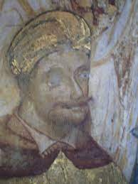
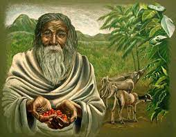
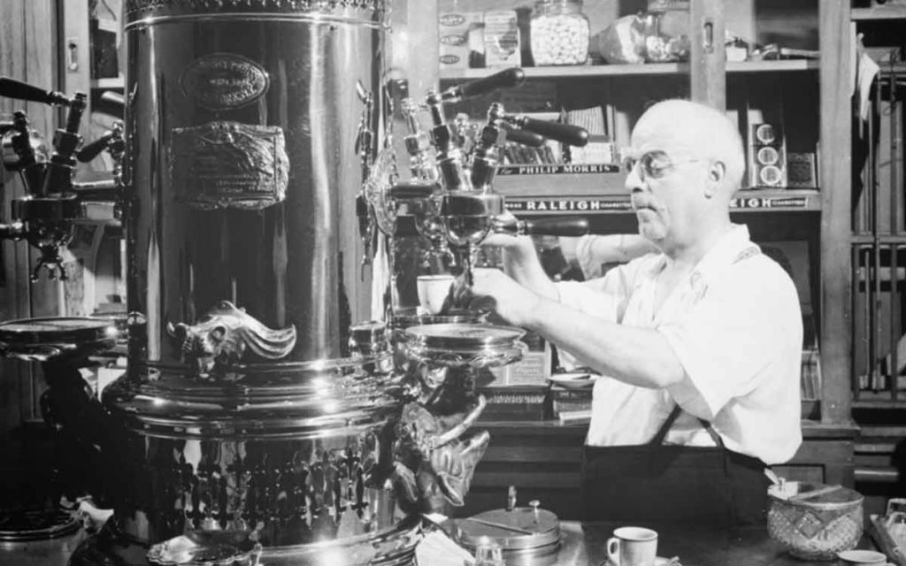
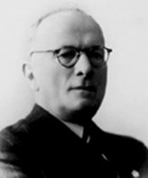

| Nume |
Fotografie |
Ani |
Detalii |
|
Ioan Tautu
|
 |
?-1511 |
Primul băutor de cafea din Moldova. |
|
Papa Clement al VIII-lea
|
 |
- A murit la 70 de ani
- 24 februarie 1536 - 3 martie 1605
|
- Din Italia a fost introdusă în restul Europei și acceptată pe scară largă după 1600
- A numit cafeaua „băutură creștină
|
|
Kaldi
|
 |
s-a nascut in jur 850 dupa de Hristos |
Este cel ce a descoperit cafeaua |
|
Luigi Bezzera
|
 |
- S-a nascut in secolul 19
- A murit in secolul 20
|
Inventează aparatul de espresso în 1901, |
|
Achilles Gaggia
|
 |
1895-1961 |
A perfectionat munca lui Luigi Bezzera, obținând astfel primul Cappuccino, denumit după asemănarea culorilor alb-negru cu robele călugărilor din ordinul Capucini. |